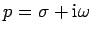

Unter einer Integraltransformation versteht man einen Zusammenhang zwischen zwei Funktionen f(t) und F(p) der Form
Die Funktion f(t) heißt Originalfunktion, ihr Definitionsbereich Originalbereich. Die Funktion F(p) nennt man Bildfunktion, ihren Definitionsbereich Bildbereich.
Die Funktion K(p,t) heißt der Kern der Transformation. Während es sich bei t um eine reelle Veränderliche handelt, ist  eine komplexe Variable.
Eine abgekürzte Schreibweise erhält man durch Einführung des Symbols  für die Integraltransformation mit dem Kern K(p,t):
für die Integraltransformation mit dem Kern K(p,t):
Man spricht kurz von  -Transformation.
-Transformation.